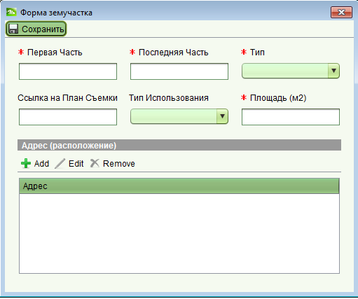

Запрос на системную регистрацию
Первоначальная регистрация запроса на системную регистрацию
Для регистрации нового запроса на системную регистрацию, используйте SOLA Desktop и создайте новое заявление
с услугой "Запрос на системную регистрацию".
Первоначально должна быть записана следующая информация:
-
На вкладке "Общие" нового заявления, введите данные претендента (или контактного лица претендента или претендентов),
включая имя, фамилию и адресную информацию.
-
На вкладке "Услуги" добавьте новую услугу "Запрос на системную регистрацию".
-
На вкладке "Недвижимость и Земучастки" введите номер участка в поле "Первая часть"
и блок и имя населенного пункта/района в поле "Последняя часть". Нажмите кнопку "Добавить недвижимость".
-
На вкладке "Документы" должны быть добавлены все документы подписанные и утвержденные, имеющие отношение к запросу на регистрацию.
На данный момент не обязательно прикреплять отсканированные копии документов, если они еще не подготовлены.
-
Перейдите на вкладку "Оплата" и нажмите кнопку "Вычислить стоимость" на главной панели инструментов.
Введите номер квитанции об оплате, сумму оплаты и отметьте флажок "Оплачено".
-
После того как вся информация введена, сохраните заявление. В результате этого будет присвоен номер заявления
и отображено уведомление о подачи заявления. Вы можете распечатать его или сохранить и прикрепить в список документов заявления.
Ввод деталей запроса
Для завершения ввода данных вам необходимо будет отредактировать заявление созданное ранее для запроса на системную регистрацию.
Выберите заявление в списке назначенных или не назначенных заявлений на панели задач и нажмите кнопку "Открыть".
Если заявления нет в этих списках, воспользуйтесь формой поиска заявлений.
В открывшейся форме заявления, вы сможете внести необходимые изменения и сохранить их.
- Откройте заявление и отметьте флажок "Оплачено" на вкладке "Оплата"
- Назначьте заявление себе
-
Откройте заявление и перейдите на вкладку "Документы". Найдите документы относящиеся к запросу на системную регистрацию у
которых нет прикрепленной цифровой копии. Выберите документ и нажмите кнопку "Редактировать". На открывшейся форме документа
прикрепите его отсканированную копию в поле "Вложение" и сохраните изменения.
-
Добавьте любые другие сопутствующие документы вместе с их цифровыми копиями.
- Сохраните заявление и запустите услугу "Запрос на системную регистрацию"
-
Будет открыта форма недвижимости, уже содержащая необходимы данные. Сверьте их соответствие с формой запроса.
Если данные недвижимости некорректны, закройте форму без сохранения каких-либо изменений и удалите данную недвижимость
на вкладке "Недвижимость и Земучастки" в заявлении.
Сохраните заявление и запустите услугу "Запрос на системную регистрацию" еще раз.
-
На появившейся форме недвижимости, оставьте поле площади пустым, так как оно будет автоматически вычислено на основе прикрепленного участка.
-
Перейдите на вкладку "Участки" и нажмите кнопку "Новый" для создания и добавления земельного участка к недвижимости.

-
Заполните поля формы с добавлением адреса (расположения) участка и сохраните изменения.
-
На форме недвижимости перейдите на вкладку "Права/Ограничения", в поле "Тип права" выберите из списка право на собственность и
нажмите кнопку "Создать".
-
Введите данные о праве собственности на появившейся форме. Удостоверьтесь, что флажок "Первичное право" отмечен и введите описание транзакции
(например "Право создано в результате системной регистрации").
Также необходимо добавить правоустанавливающие документы в список документов.
-
Если существуют какие-либо еще права или ограничения для данной недвижимости, обнаруженные в процессе легализации, необходимо
добавить соответствующие услуги в заявление и зарегистрировать эти права через них.
-
Сохраните
 изменения в форме недвижимости
и заверщите услугу "Запрос на системную регистрацию".
изменения в форме недвижимости
и заверщите услугу "Запрос на системную регистрацию".
Смотрите также: